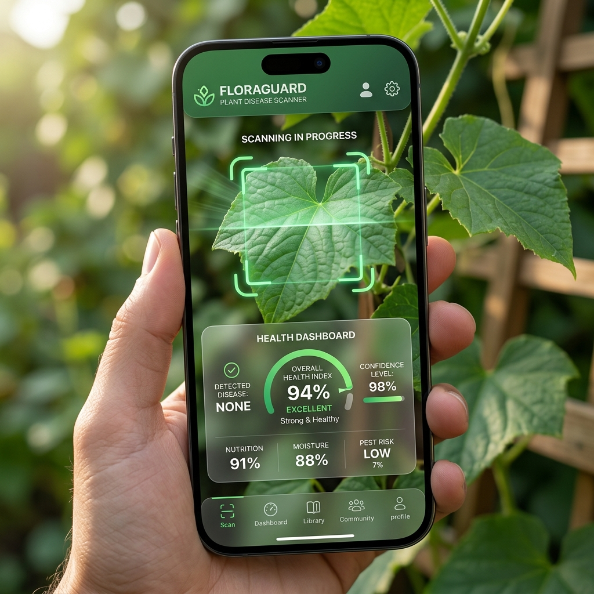
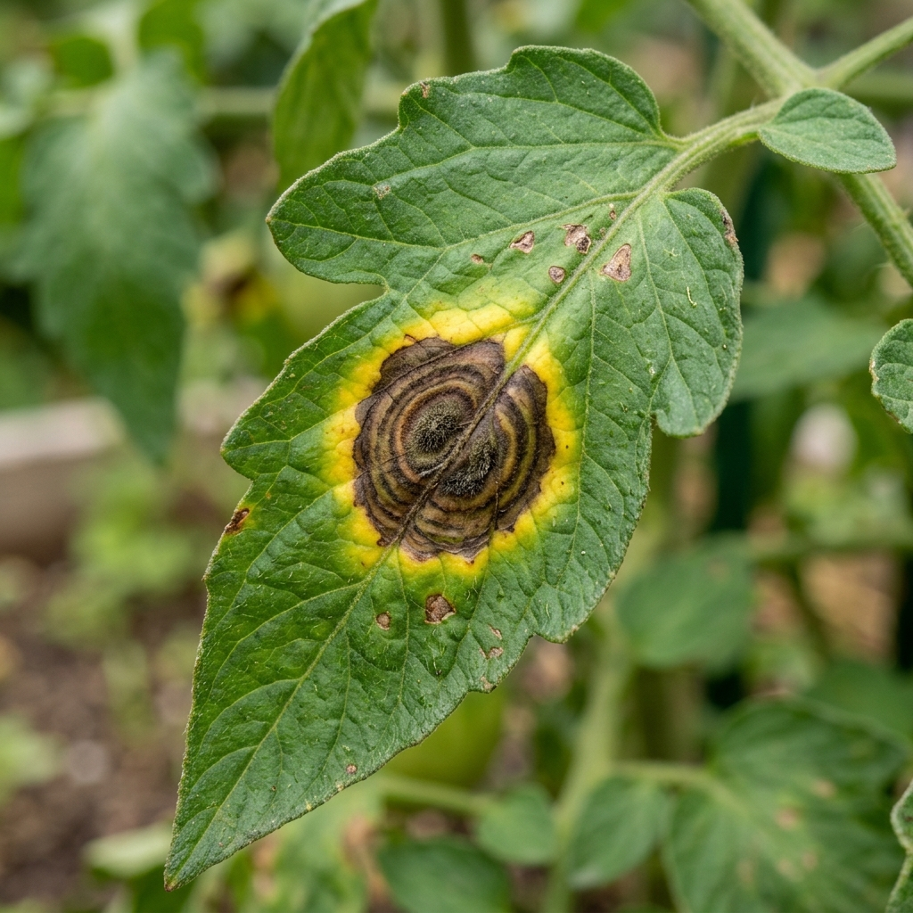
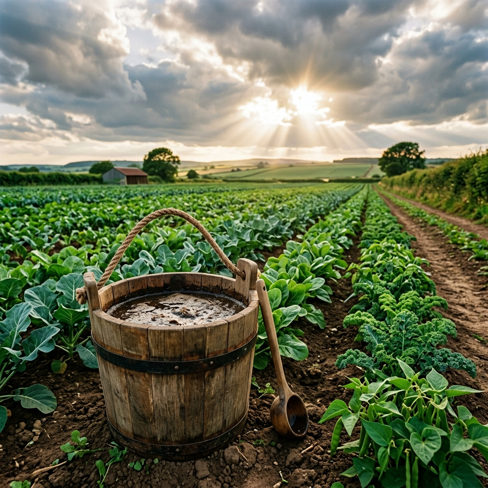

Project Presentation
Farmtime
A high-fidelity digital companion web app bridging the gap between scientific plant pathology diagnostics and natural, eco-friendly crop curing practices.
- Role Integration: Built from the combined perspective of an Agriculture Officer, a practical Farmer, and a Senior App Developer.
- Deployability: Standard React-Vite stack configured to deploy seamlessly on Vercel.

Challenges in Farming
Foliar Diseases & Yield Loss
Farmers lose significant crop yields annually to plant pathogens. Identifying diseases early and finding sustainable cures is a critical bottleneck.
- Information Deficiency: Delayed expert consultancies lead to spreads of blights and mildews.
- Chemical Overdosing: Soil health is degraded by excessive chemical pesticide treatments.
- Market Isolation: Inability to track commodity prices at regional APMC markets.

Spectrometer Scanner
Pixel-Level Leaf Analytics
The app analyzes the leaf chlorophyll and pigment concentrations locally using HTML5 canvas arrays, requiring no server processing.
- Chlorosis (Yellowing): Samples yellow cells indicating early blight or nitrogen deficit.
- Necrosis (Tissue Rot): Samples dark/brown patches matching late blight or scabs.
- Mildew (Fungal Fuzz): Samples white patches indicative of powdery mildew.
- Spot Overlays: Draws bounding rings around infected spots in real time.
ZBNF Integration
Zero-Budget Formulations
Farmtime targets raising Soil Organic Carbon (SOC) levels above 1.0% to rebuild plant immunity without chemical expenses.
- Jeevamrutha: Soil microbial inoculant recipe containing dung, urine, jaggery, flour, and soil.
- Neemastra / Agniastra: In-house botanical pest repellents made of neem leaves and hot chili sprays.
- Soil Card Replenisher: Input NPK and pH values to receive biological amendments.

Agri-Suite Tools
Krishi Mitra AI & Mandi Prices
We packed high-value tools to keep the farmer informed of both agronomic advisory warnings and market commodity conditions.
- Krishi Mitra Chatbot: Custom rule-based NLP agent containing detailed recipes and pest remedies.
- Mandi Commodity Index: Track prices per quintal for key crops with gain/loss trends.
- Harvest Estimator: Estimated gross revenue and market selling strategy calculator.
- Sowing Schedules: Monthly charts for Kharif, Rabi, and Zaid crops.